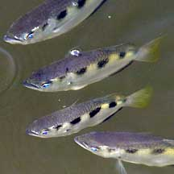
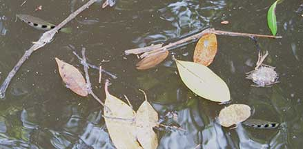
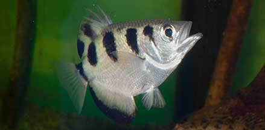
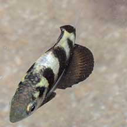

|
|
| fishes text index | photo index |
| Phylum Chordata > Subphylum Vertebrata > fishes |
| Archerfishes Family Toxotidae updated Oct 2020
Where seen? These surface dwelling fishes are commonly seen in mangroves and under jetties on our Northern shores. There are usually large groups of big fat archerfishes under the main bridge at Sungei Buloh Wetland Reserve. Smaller ones are sometimes seen at the Changi Village jetty. What are archerfishes? Archerfishes belong to Family Toxotidae. According to FishBase: the family comprises 1 genus and 6 species found from from India to the Philippines, Australia and Polynesia. Features: To about 20cm long. Body somewhat flattened sideways, shaped like a knife with a pointed snout and broad rear end. Large scales. Large eyes near the top of the head and large upward-facing mouth. |
 Archerfishes hanging under the main bridge. Sungei Buloh Wetland Reserve, Nov 04 |
 Swimming at the surface among floating debris. Kranji, Feb 11 |
| Shooting fish: Archerfishes are
famed for their ability to shoot down insects and small creatures
resting on foliage or mangrove roots. In fact, 'toxotes' means
'bowman' or 'archer'. Their flattened body presents a narrow profile
from above, so they can sneak up on their prey. The bold black-and-white
markings camouflage them in the sundappled water under mangrove vegetation. How do they shoot? Archerfishes are like submarine water pistols and can spit out a strong and accurate jet of water. To form this water jet, the tongue is placed against the groove on the roof of the mouth. Water is powerfully forced through this tube by snapping the gills shut. The tip of the tongue acts as a valve. The Australian Museum Fish Site has a photo of the inside of an archerfish's mouth to show the groove on the roof of the mouth and shape of the tongue. To get a good jet of water, the snout sticks out of the water, but the rest of the fish remains underwater. The jet of water is directed with the tip of the tongue. The large eyes located near the mouth give good binocular vision for accurate aim. The eyes, however, do not automatically correct for refraction, and the fish has to learn how to do this. The position of least distortion is directly below the prey, and the fish soon learn that this is the best shooting spot. The fish can squirt up to 7 times in quick succession, and the jet can reach 2-3m, but they are accurate to only about 1-1.5m. Fish as small as 2-3cm long can already spit, but their jets reach only 10-20cm. Once the jet of water knocks down a tasty titbit, it is gulped down with the large mouth which faces upwards. If the blast doesn't knock down the prey, sometimes the weight of the water on the wings causes the insect to lose its grip and fall. |
 A large upward facing mouth. Sungei Buloh Wetland Reserve, Oct 03 |
 Juvenile. Kusu Island, Aug 17 Photo shared by Marcus Ng on flickr. |
| Other ways to get their lunch: Archerfishes,
however, prefer to leap out of water to grab the prey in their jaws
when it is close enough. When the leap fails, they may then resort
to spitting. Why is this so? Archerfishes usually swim in shooting parties. Often, several shoot at the same prey, and shoot relentlessly. When the prey finally falls, all rush to grab it. As the sharpshooter doesn't always get the prize, if the prey is within reach, the fish prefers to leap out of the water and grab it in its jaws. A prey in the mouth is worth two spat at! They can jump up to 30cm high. But Archerfishes don't just eat above-water prey. They also hunt small aquatic creatures and fishes, sometimes swimming in deeper water to catch these. Archer babies: It is believed that only the juveniles are found in brackish water while the adults are more solitary and swim out to the coral reefs to breed. 20,000-150,000 eggs are laid. Only a few reach maturity in 1-2 years. Young fish have iridescent yellow patches on their upper body between the dark bands, which perhaps helps them to school together in the muddy waters. As they get older, patches disappear and the black bands get shorter and eventually only seen on the uppermost part of the body. Role in the habitat: Archerfishes control populations of their prey. They are also food for others higher up on the food chain. Human uses: Two Southeast Asian species are collected for the aquarium fish trade. They are not bred in captivity. In Kew Gardens, Archer fishes are kept in ponds with tropical waterlilies to help keep down small insect pests and aphids! Status and threats: Our archerfishes are not listed among the threatened animals of Singapore. However, like other creatures of the intertidal zone, they are affected by human activities such as reclamation and pollution. Although they are still fairly common, they are threatened by the destruction of mangroves and by collection for the pet trade. |
| Some Archerfishes on Singapore shores |
| Family
Toxotidae recorded for Singapore from Wee Y.C. and Peter K. L. Ng. 1994. A First Look at Biodiversity in Singapore.
|
Links
References
|